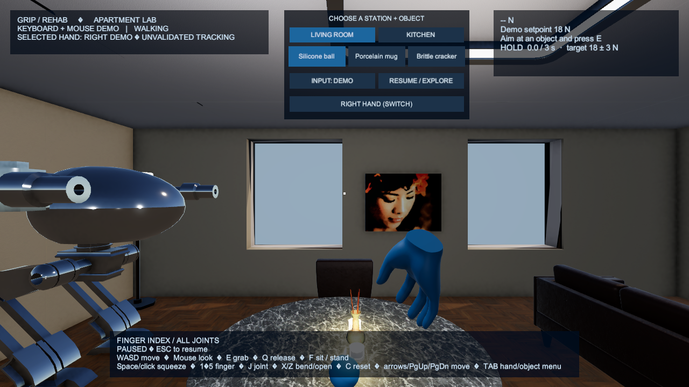
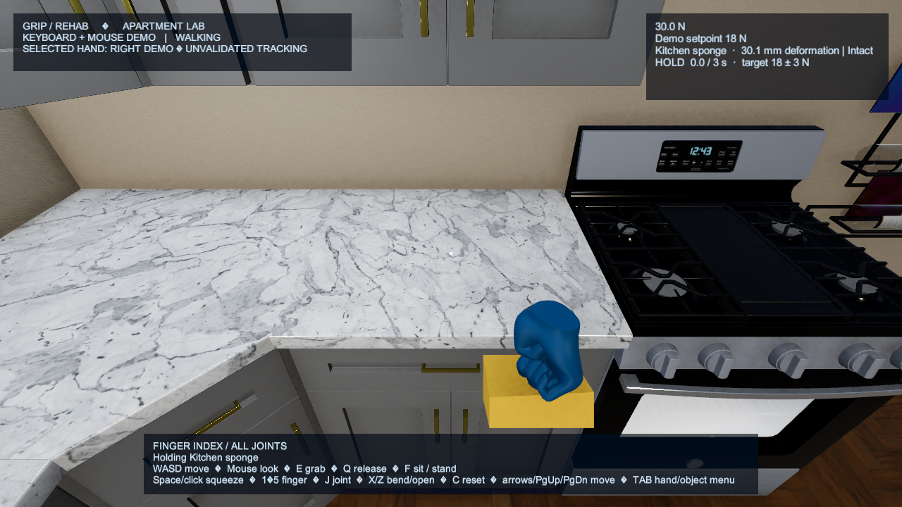
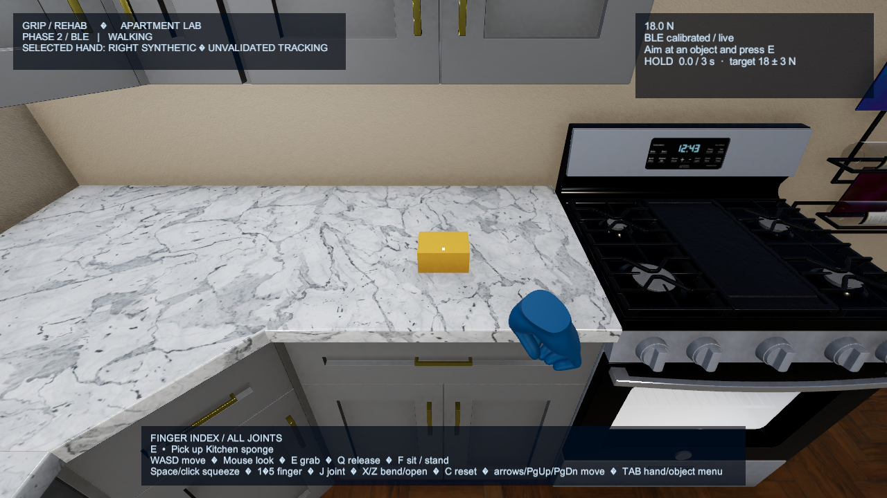

دليل عملي من الصفر • Unity 6000.4.4f1
شقتك، إيدك، وأول تمرين
المشروع موجود دائمًا في E:\GP\codex\GripRehab-Unity. هذه نسخة العمل الجديدة لجزء Unity. تبدأ اللعبة الآن بكاميرا MediaPipe المحلية؛ يمكنك التبديل إلى الكيبورد والماوس من زر B لتجربتها دون كاميرا أو هاردوير.
١. فتح المشروع
- افتح Unity Hub: هو مدير المشروعات والإصدارات.
- اختَر Projects → Add → Add Project from Disk.
- اختَر فولدر
GripRehab-Unity نفسه، وليس Assets ولا ملف المشهد. ستجد داخله Assets وPackages وProjectSettings. - اضغط اسم المشروع لفتحه بـ 6000.4.4f1. أول استيراد قد يستغرق عدة دقائق.
- داخل Unity Editor افتح من نافذة Project:
Assets/Scenes/GripRehab.unity بدبل كليك. - لو ترتيب النوافذ غير واضح، اختَر من القائمة Grip Rehab → Open Beginner Workspace.
Unity Editor هو البرنامج الذي تعدّل داخله المشهد والكود وتجرب اللعبة. المشروع محفوظ كملفات على جهازك، وHub لا يستبدل هذه الملفات.
٢. أول تجربة — الكاميرا والكيبورد
- اضغط Play ▶ أعلى Editor. تفتح كاميرا اللابتوب تلقائيًا وتظهر معاينة صغيرة في نافذة Game. انظر إلى حالة CAMERA في الواجهة؛ الصورة وحدها لا تثبت اكتشاف اليد.
- من القائمة اختر HAND: RIGHT أو HAND: LEFT، ثم LIVING ROOM أو KITCHEN والجسم. اضغط RESUME / EXPLORE.
- ضع يدك المختارة كاملةً في الصورة، افتح أصابعك وأغلقها. إذا كتب HUD LIVE وتظهر نقاط اليد في المعاينة، تتحرك مفاصل يد VirtualGrasp. إذا كتب SEARCHING فليس هناك تتبع صالح الآن.
- حرّك اليد الافتراضية قرب الجسم المختار ثم أغلق أصابعك لتلتقطه تلقائيًا. افتح اليد ليفلت. المسافة والعمق مقدران من صورة كاميرا واحدة؛ قرّب/أبعد يدك عن الكاميرا إذا كانت اليد الافتراضية بعيدة عن الجسم.
- V يخفي/يظهر المعاينة. B يبدّل بالتتابع: Camera → Keyboard Demo → Phase 2 → Camera. بدون الجهاز لا يدخل Phase 2 وضع الديمو تلقائيًا.
- في الديمو فقط: صوب على الجسم واضغط E، ثم Space أو الماوس الأيسر للضغط؛ Q للإفلات. استخدم الأرقام 1–5 وJ وX/Z للتحكم بكل إصبع ومفصل.
- للخروج، اضغط Play مرة ثانية. يتوقف عامل الكاميرا وتتحرر المنافذ. احفظ التعديلات خارج Play بـ Ctrl+S.
| الزر | الوظيفة |
|---|
| W / A / S / D + Mouse | مشي ونظر |
| B | تبديل الكاميرا / الديمو / Phase 2 |
| V | إخفاء أو عرض معاينة الكاميرا |
| F / Tab / Esc | جلوس أو وقوف / القائمة أو تحرير الماوس |
| E / Q | إمساك الديمو أو فتح باب / إفلات |
| Space / عجلة الماوس / +/- | ضغط وقيمة تجريبية في الديمو فقط |
| 1–5 / J / X / Z / C | اختيار إصبع ومفصل / ثني / فتح / تصفير في الديمو |
| R | إعادة الأجسام لأماكنها |
تسمية VISUAL GRIP تعني نسبة غلق أصابع بالصورة، وليست قوة نيوتن مقاسة. اختر من الصالة كرة السيليكون أو كوب الخزف أو البسكويت؛ ومن المطبخ إسفنجة أو كوب سيليكون أو طماطم. اقرأ دليل الكاميرا واليد إذا لم تظهر النقاط أو انقلب اختيار يمين/يسار.

صورة قديمة من الاختبار؛ توضيح الوضع الجديد في الدليل المكتوب.
٣. النوافذ الأساسية
| النافذة | تستخدمها في إيه؟ |
|---|
| Hierarchy | عناصر المشهد الحالي: الشقة، الإضاءة، اللاعب، محطات التمرين، الواجهة. |
| Scene | تعديل العناصر بالمؤشر من أي زاوية. اختر عنصرًا واضغط F لتقريب كاميرا التحرير إليه. |
| Game | ما يراه اللاعب من كاميرا المنظور الأول. تتفاعل معه أثناء Play. |
| Inspector | إعدادات العنصر المحدد ومكوناته، مثل Transform والمواد والسكربتات. |
| Project | ملفات Assets الفعلية: المشاهد، المجسمات، الكود والمواد. |
| Console | رسائل البرنامج والتحذيرات والأخطاء. اضغط الخطأ مرتين للوصول للسطر المرتبط به. |
الحفظ: اخرج من Play ثم اضغط Ctrl+S. التعديلات المعتادة على عناصر المشهد أثناء Play تُلغى عند Stop. لا تعتمد على Play لحفظ تعديل دائم.
٤. أنواع الملفات
| النوع | معناه |
|---|
| .unity | Scene: ترتيب العناصر والكاميرات والإضاءة والمراجع المحفوظة. |
| .prefab | قالب عنصر قابل لإعادة الاستخدام. تعديله قد يؤثر على نسخه؛ Overrides تعديلات خاصة بنسخة داخل المشهد. |
| .cs | كود C#: يحدد الحركة، الإدخال، التشوه أو قواعد التمرين. |
| .mat | Material: اللون والملمس واللمعان وطريقة الرسم. |
| .fbx | مجسم ثلاثي الأبعاد، وقد يحتوي على شبكة وعظام تحريك. |
| .png / .jpg | صور وملامس؛ ليست كودًا. |
| .asset | إعدادات محفوظة مثل ApartmentSettings وإعدادات الرندر. |
| .meta | هوية الملف وإعدادات استيراده. لا تحذفه ولا تنقل ملفًا من خارجه من دون الـ meta؛ الأفضل النقل داخل نافذة Project. |
Assets محتوى المشروع. Packages الحزم المطلوبة. ProjectSettings إعدادات المشروع. Library كاش يعيد Unity توليده؛ ليس مصدر اللعبة. Tools برامج الاتصال الخارجية. Builds النسخة القابلة للتشغيل بعد البناء.
٥. خريطة الملفات والعناصر
المجلد الرئيسي للكود الجديد: Assets/Rehab/3.4.1-force-object-interaction/Apartment.
| ما تريد تعديله | المكان |
|---|
| الشقة والأثاث | Hierarchy: 01 · Apartment 02
Prefab: Assets/Rehab/3.1-environment/Apartment/Prefabs/Apartment02.prefab |
| الإضاءة | Hierarchy: 02 · Daylight and room bounce، وملف ApartmentGrade.asset. |
| سرعة المشي / حساسية الماوس / قوة الديمو | Assets/Rehab/3.1-environment/Apartment/ApartmentSettings.asset |
| الشخص والكاميرا | Hierarchy: 03 · First person patient؛ ApartmentPlayer.cs. الكاميرا وحساس الحركة غير مرئيين؛ اليد المختارة فقط ظاهرة. |
| الإيد والأصابع | هيكلتا إدخال يمين وشمال مخفيتان تحت الكاميرا، واليد الظاهرة واحدة من Assets/com.gleechi.unity.virtualgrasp؛ تتحرك عبر RehabVGController.cs وFingerPoseDriver.cs. |
| مسك وضغط / مصدر القوة / نص الواجهة | ApartmentExperience.cs |
| تشوه وتكسير الأجسام | Hierarchy: 04 · Force interaction stations؛ SqueezableObject.cs. تختار كل جسم لتغيّر خواصه في Inspector. |
| الجلوس والوقوف | SeatPoint.cs على الكرسي، وSeated feet / Stand-up clearance في المحطات. |
| ألوان وحجم الواجهة | Hierarchy: 05 · First person HUD، عدّل Text وImage وRectTransform. |
| اتصال Phase 2 | Assets/Rehab/6.1-bluetooth-integration و Tools/Phase2Bridge. |
| رؤية الكاميرا | Assets/Rehab/3.2-vision و Tools/Vision. |
أرقام المجلدات مرتبطة بمهام WBS. كود التمارين المعرفية والتناسق موجود للمراحل التالية؛ النسخة الحالية من الشقة تركز على المسك والتشوه.
٦. ثلاثة تعديلات بسيطة
- تحريك جسم: اخرج من Play. اختر Living room therapy ball تحت المحطات. اضغط W لأداة التحريك واسحب السهم أو عدّل Transform → Position. تحرك مسافة صغيرة فوق الترابيزة، Ctrl+S، ثم جرّب Play.
- تغيير اللون: افتح
Assets/Rehab/3.1-environment/Apartment/Materials واختر Therapy_silicone_blue.mat. غيّر Base Map color في Inspector. المادة المشتركة تغيّر كل العناصر التي تستخدمها. لعنصر بلون خاص، انسخ المادة بـ Ctrl+D واربط النسخة به. - تغيير إعداد: افتح ApartmentSettings.asset. غيّر Demo Force Newtons من 18 إلى 20، احفظ ثم شغّل. هذه إعدادات عرض تجريبي وليست وصفة علاجية. افتح Profile المرتبط بالجسم في Inspector لتعديل مقاومة الضغط والتشوه والكسر؛ إعدادات SqueezableObject القديمة تُستخدم فقط إذا لم يُربط Profile.
Ctrl+Z يتراجع عن التعديلات. قبل التعديلات الكبيرة احفظ نسخة أو استخدم Git. لا تشغّل أدوات إعادة إنشاء المشهد على نسختك المعدلة.
٧. تعديل الكود ومتابعة شغلنا
- دبل كليك على ملف .cs في Project يفتح محرر الكود المضبوط في Unity Preferences → External Tools.
- احفظ الملف في المحرر، وارجع إلى Unity وانتظر انتهاء التجميع.
- إذا ظهرت رسالة حمراء في Console، افتح أول خطأ واقرأ اسم الملف ورقم السطر. أخطاء التجميع تمنع Play؛ انسخ نص الخطأ عند طلب المساعدة.
- لنكمل معًا: حدّد اسم العنصر أو مسار السكربت، وصف السلوك المطلوب والحالي. سأعدّل الملفات داخل نفس الفولدر، وUnity يستورد التغييرات.
- احفظ المشهد قبل تغييراتنا الكبيرة، واترك Play عند تعديل العناصر الدائم. جرّب السلوك بعد كل تعديل.
لا يلزم فتح كل سكربت مرة واحدة: الملفات كلها متاحة في Project، وتفتح ما تحتاجه حسب الجزء الذي تعدّله.
٨. الهاردوير، الاختبارات والحدود الفعلية
الهاردوير المستهدف Nano 33 IoT + HX711. بروتوكول BLE يبقى كما هو، ومحول Python يرسل إلى Unity على 27818؛ الكاميرا تستخدم 27817. التفاصيل وخطوات Synthetic Replay في دليل الربط، وشرح حساسات الأصابع والمواد في دليل التفاعل الجديد، وشرح اختيار اليد وMediaPipe في دليل اليدين.
الـ load cell يعطي قوة إجمالية ولا يقيس مفاصل الأصابع. حركة الديمو متحركة برمجيًا؛ كاميرا MediaPipe تفتح الآن تلقائيًا وتحتاج اختبار حركة يد حقيقية أمامها. نقاطها لا تقيس قوة الضغط. التشوه والكسر تأثيرات فيزيائية مبسطة، وليسا قياسًا لخصائص مادة حقيقية. اختبار المحاكاة لا يثبت اتصال جهاز فعلي ولا صلاحية علاجية.
من القائمة Grip Rehab → Run Apartment Play Tests (3 cycles) تشغّل الاختبارات. Verify Scene and Logic يراجع العقود والمراجع، وBuild Windows Demo يبني النسخة دون إعادة توليد المشهد. النتائج الفعلية في تقرير المراجعة.

الصورة التالية تستخدم بيانات رؤية صناعية لا كاميرا فعلية:
